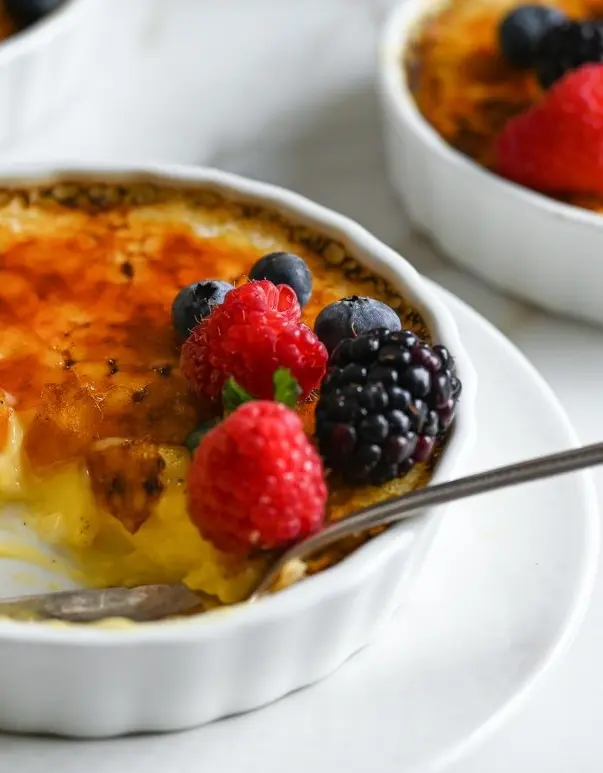
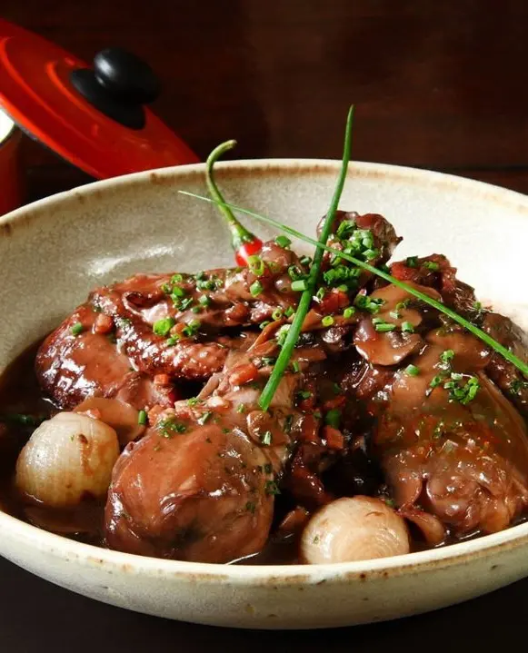
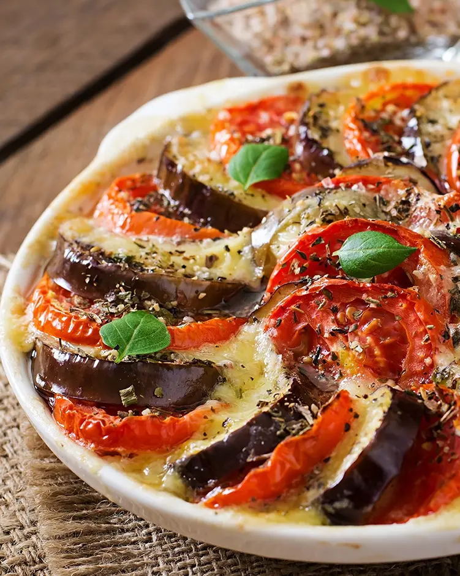
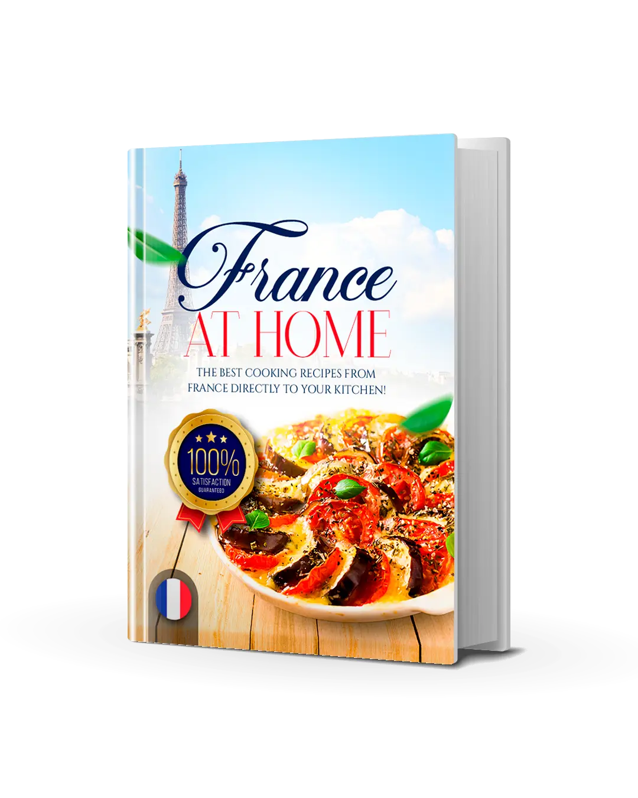
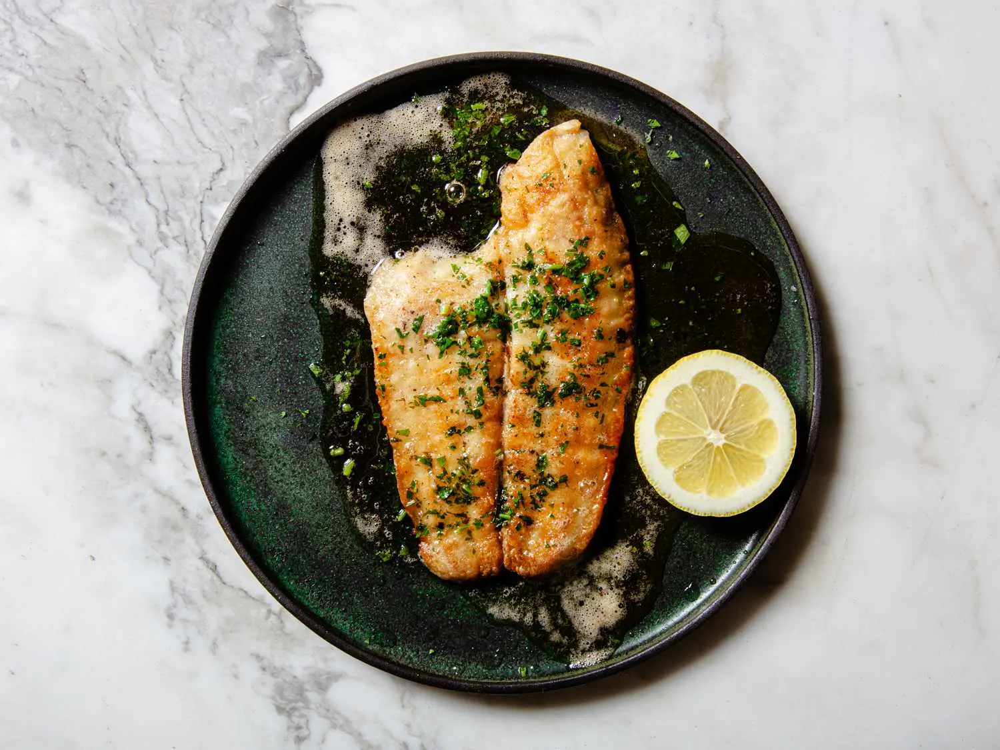
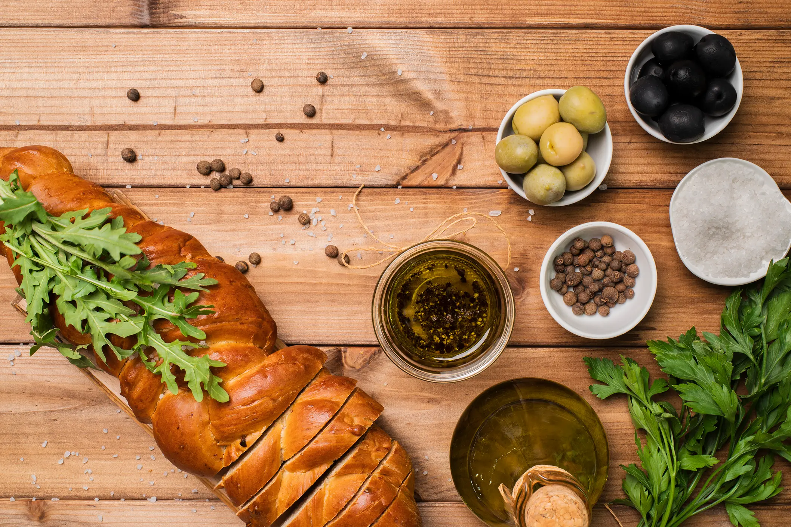
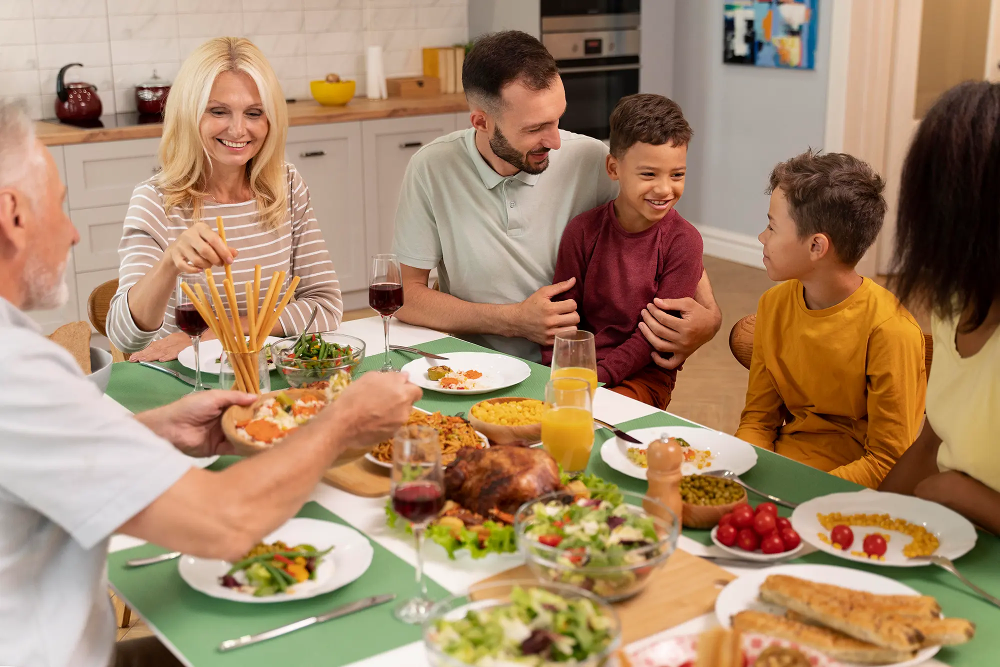

DISCOVER THE SECRETS OF
French
CULINARY
AND LEARN TO COOK LIKE A CHEF
WITH OVER 50+ EXCLUSIVE RECIPES!



AUTHENTIC RECIPES
Detailed step by step, for you to
shine in the kitchen!
Authentic Recipes: Discover traditional French recipes, each carefully selected to offer you the true taste of France.
Easy Preparation: Each recipe is clearly and simply explained, with step-by-step instructions, perfect even for beginners in the kitchen.
Quick Preparation: Enjoy delicious meals ready in just a few minutes, perfect for busy schedules and last-minute dinners.
Wellness and Taste: Combine the goodness of French cuisine with the benefits of fresh, wholesome ingredients for dishes that are good for both body and palate.

CUSTOMER REVIEWS
514 Reviews - Overall Rating 4.7/5
30-DAY MONEY BACK GUARANTEE
Try it for 30 days. If you don't love the recipes, we'll refund every penny. No questions asked.

AUTHENTIC RECIPES
Immerse yourself in the heart of French culinary tradition with authentic recipes, carefully selected to offer you the true taste of France. Each dish celebrates the rich gastronomic traditions of various French regions. From classics like homemade baguettes to delightful main courses and desserts, you’ll discover genuine flavors that will transport you directly to the kitchens of French grandmothers.

GENUINE INGREDIENTS
The recipes in this book use fresh and easily available ingredients, found in most supermarkets. You won’t need to hunt for exotic or expensive items; instead, you’ll discover how to combine simple ingredients to create dishes with exceptional flavor. The genuineness of the ingredients ensures not only taste but also wellness.

FAMILY DINNER
Whether you’re looking for a quick meal for a weeknight or a special dish to impress your guests on a special occasion, this book has the right recipe for you. “France at home” offers a variety of dishes that suit all situations, from everyday dinners to festive lunches. With these recipes, every meal will become a moment of joy and sharing.